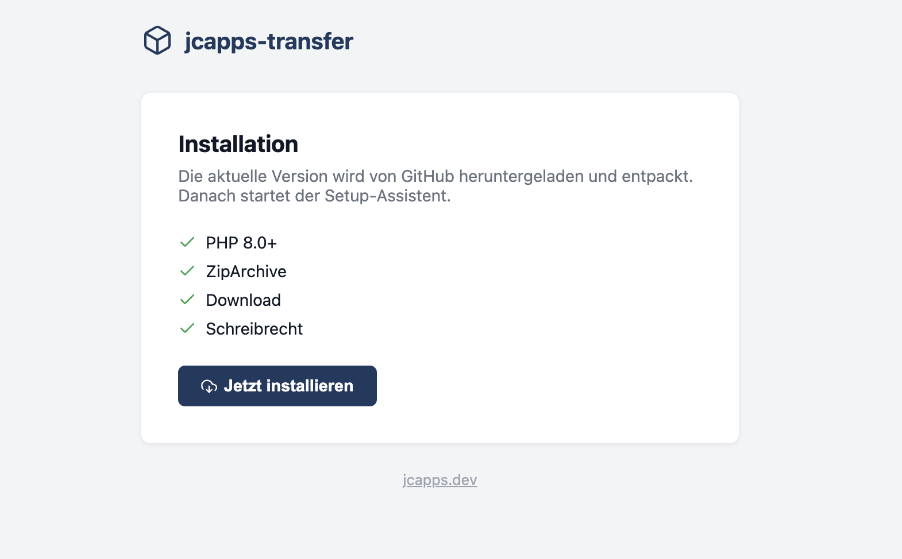
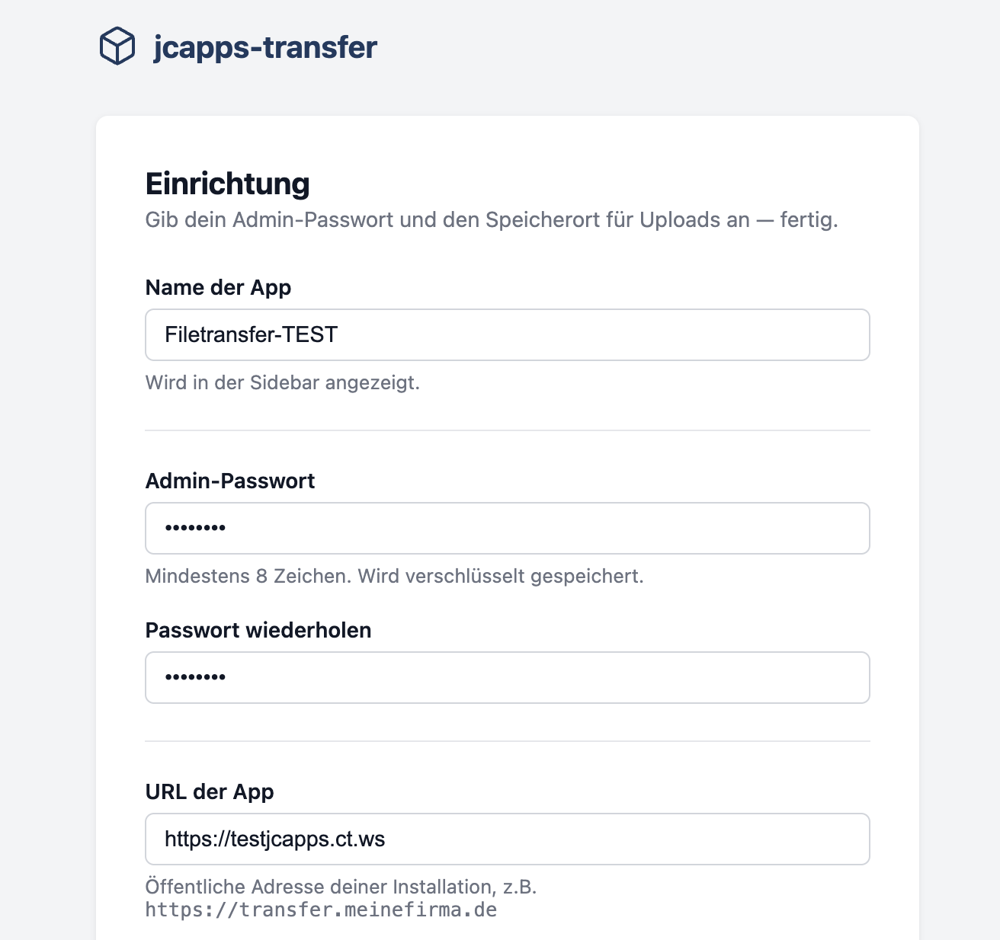
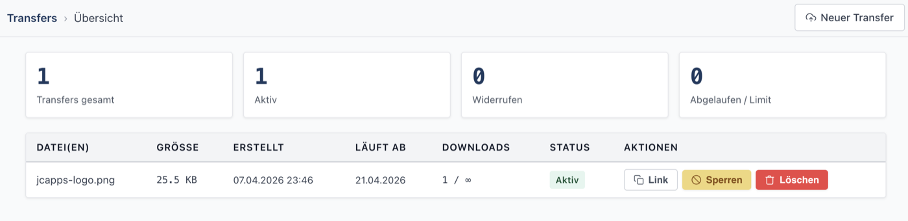
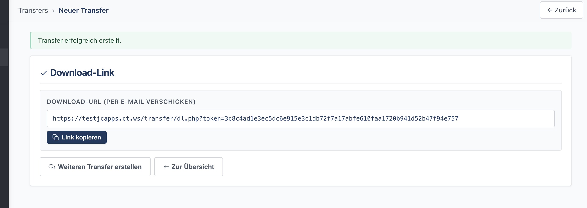
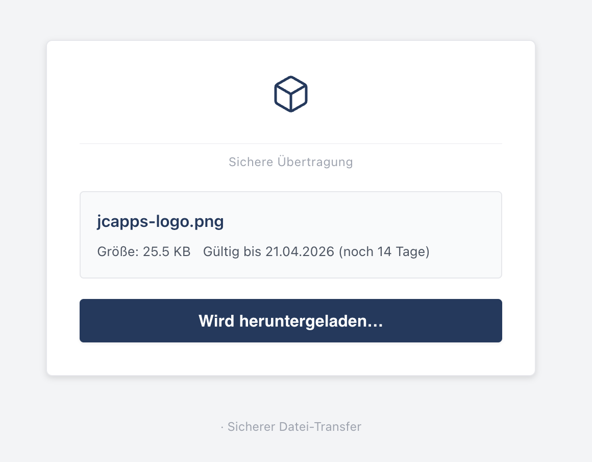

From install to first transfer. Five steps, five screens.

Upload a single install.php to your webroot. It checks PHP version, ZipArchive, download capability and write permissions — then pulls the latest release directly from GitHub.

A minimal setup wizard: choose a name, set your admin password and confirm the app URL. The upload directory is auto-detected — outside the webroot when possible, inside when not.

The admin dashboard lists all transfers with file name, size, creation date, expiry, download count and status. Revoke access or delete a transfer with a single click.

After uploading, you get a secure download link with a 256-bit token. Copy it and send it — by email, chat, or any other channel. No account required for the recipient.

Recipients see a clean, minimal page with the file name, size and expiry date. One button to download — no login, no ads, no tracking.
install.php on any PHP host and you're up in minutes.